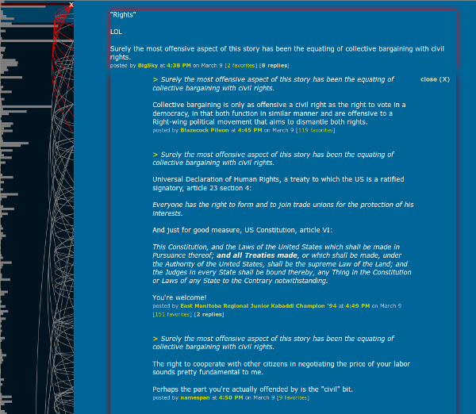
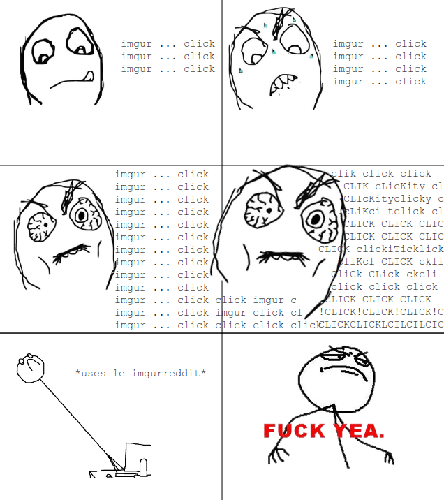
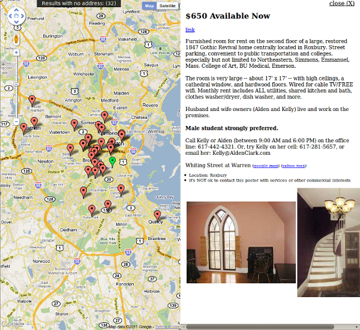
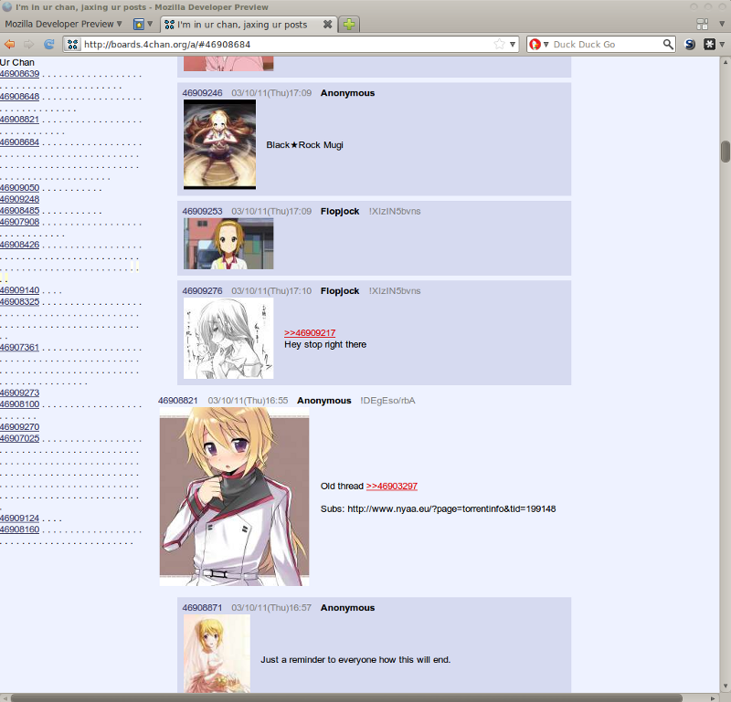

This is a small collection of bookmarklets for social websites.
GraphFi is a visualization/navigation tool for metafilter. It displays a chart indicating the number of times a comment has been favorited and the reply/quoting relationships between comments. It also inserts anchor links and replies into the comment feed to assist with "threading".
Drag this bookmarklet to your bookmarks bar, or right-click and "bookmark this".
→
GraphFi
←
When in a metafilter discussion, click it to augment the page. Works on any metafilter post page (talk, blue, green, etc); most useful in larger threads (50+ comments).
NOTE: will not function properly in Internet Explorer less than version 9-beta.

Pulls all images from image links directly into the reddit page. Reduces clicks. To use:
Drag bookmarklet to your bookmarks bar, or right-click and "bookmark this".
→
ImgurReddit
←
When on reddit, click. Win. Works on any subreddit or the main page.

Puts the location, location, location in CraigsList apartment listings.
Drag bookmarklet to your bookmarks bar, or right-click and "bookmark this".
→
CraigsMap
←
Search for a neighborhood/search terms on craigslist housing search. Click bookmarklet to map them.

Warning: This is experimental and it will peg your processor. Only runs unreasonably in modern, fast browsers (FF 4+, Chrome 10+, etc). Unless your boxen is a beast, not quite so functional on heavier traffic boards like /b/, even with the latest browsers.
This was intended as a "sit back and watch the flood" version of 4chan. It automatically polls and pulls in every single comment and post to a particular board in real time. Go to the board, click the bookmarklet, and watch the flood turn your scrollbar into a tiny dot.
Drag bookmarklet to your bookmarks bar, or right-click and "bookmark this".
→
JaxyChan
←
When on a 4chan board, click it to get jaxed.
